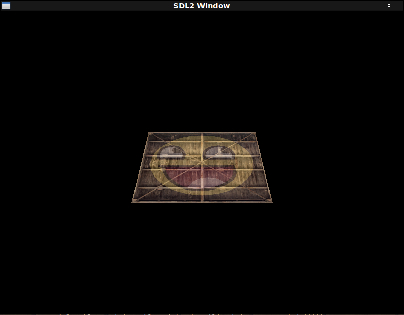
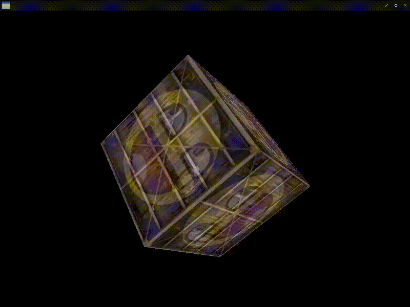
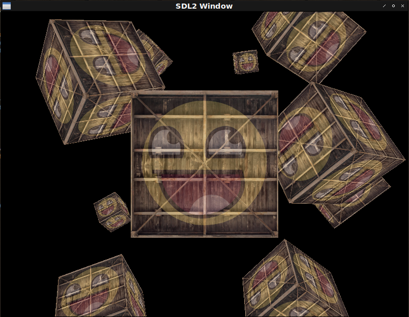

Fight against cl-opengl 12.
Metanotes
対象読者
前章読了済みの方。
Introduction.
前章では行列演算の導入により画像の移動、伸縮、回転を行いました。 本章では3Dの世界に一歩踏み出します。
実装というよりは3D-MATRICESのtutorialsのような内容になります。
Perspective.
二次元画像に遠近法を適用させることで三次元風に表示してみましょう。
(defshader coord-demo 330 (xy st)
(:vertex ((coord :vec2) &uniform (model :mat4) (view :mat4) (projection :mat4))
"gl_Position = projection * view * model * vec4(xy, 0.0, 1.0);"
"coord = st;")
(:fragment ((color :vec4) &uniform (tex1 :|sampler2D|) (tex2 :|sampler2D|))
"color = mix(texture(tex1, coord), texture(tex2, coord), 0.2);"))
(defparameter *texture-quad*
(concatenate '(array single-float (*))
(make-instance 'coord-demo :x -0.5 :y 0.5 :s 0.0 :t 1.0) ; top left
(make-instance 'coord-demo :x 0.5 :y 0.5 :s 1.0 :t 1.0) ; top right
(make-instance 'coord-demo :x -0.5 :y -0.5 :s 0.0 :t 0.0) ; bottom left
(make-instance 'coord-demo :x 0.5 :y -0.5 :s 1.0 :t 0.0))) ; bottom right
(defun coord-demo ()
(sdl2:with-init (:everything)
(sdl2:with-window (win :flags '(:shown :opengl)
:x 100
:y 100
:w 800
:h 600)
(sdl2:with-gl-context (context win)
(with-shader ((coord-demo
(:vertices *texture-quad*)
(:indices '(0 1 2 2 3 1))
(:uniform (tex1 :texture-2d (tex-image-2d *image*))
(tex2 :texture-2d (tex-image-2d *face*))
model view projection)))
(let ((m (3d-matrices:nmrotate (3d-matrices:meye 4)
3d-vectors:+vx+ ; <--- ｘ軸を指定。
(radians -55))) ; <--- 55度で回転。
(v (3d-matrices:mtranslation (3d-vectors:vec 0 0 -3)))
(p (3d-matrices:mperspective 45 ; <--- 遠近法を適用させるための行列。
(multiple-value-call #'/ (sdl2:get-window-size win))
0.1
100)))
(flet ((send (matrix uniform)
(gl:uniform-matrix uniform 4 (vector (3d-matrices:marr matrix)))))
(sdl2:with-event-loop (:method :poll)
(:quit ()
t)
(:idle ()
(with-clear (win (:color-buffer-bit))
(send m model)
(send v view)
(send p projection)
(draw-elements :triangles (indices-of coord-demo))))))))))))
注意点は3D-MATRICES:NMROTATEはradianを受け取るのに対し3D-MATRICES:MPERSPECTIVEはdegreeを受け取る点です。
双方引数はANGLEとなっているので混同するので（一敗）こういうのはやめてほしいところです。
DEPTH
奥行きも入れてcubeを作ってみましょう。
:depth-testの追加と:depth-buffer-bitのリセットが必要です。
回転が早すぎるので適当にCL:SLEEPを挟むとします。
(defclass xyz ()
((%x :initarg :x :type single-float)
(%y :initarg :y :type single-float)
(%z :initarg :z :type single-float))
(:metaclass vector-class))
(defshader depth-demo 330 (xyz st)
(:vertex ((coord :vec2) &uniform (model :mat4) (view :mat4) (projection :mat4))
"gl_Position = projection * view * model * vec4(xyz, 1.0);"
"coord = st;")
(:fragment ((color :vec4) &uniform (tex1 :|sampler2D|) (tex2 :|sampler2D|))
"color = mix(texture(tex1, coord), texture(tex2, coord), 0.2);"))
(defparameter *depth-demo*
(flet ((make (x y z s %t)
(make-instance 'depth-demo :x x :y y :z z :s s :t %t)))
(concatenate '(array single-float (*))
;;
(make -0.5 -0.5 -0.5 0.0 0.0)
(make 0.5 -0.5 -0.5 1.0 0.0)
(make 0.5 0.5 -0.5 1.0 1.0)
(make 0.5 0.5 -0.5 1.0 1.0)
(make -0.5 0.5 -0.5 0.0 1.0)
(make -0.5 -0.5 -0.5 0.0 0.0)
;;
(make -0.5 -0.5 0.5 0.0 0.0)
(make 0.5 -0.5 0.5 1.0 0.0)
(make 0.5 0.5 0.5 1.0 1.0)
(make 0.5 0.5 0.5 1.0 1.0)
(make -0.5 0.5 0.5 0.0 1.0)
(make -0.5 -0.5 0.5 0.0 0.0)
;;
(make -0.5 0.5 0.5 1.0 0.0)
(make -0.5 0.5 -0.5 1.0 1.0)
(make -0.5 -0.5 -0.5 0.0 1.0)
(make -0.5 -0.5 -0.5 0.0 1.0)
(make -0.5 -0.5 0.5 0.0 0.0)
(make -0.5 0.5 0.5 1.0 0.0)
;;
(make 0.5 0.5 0.5 1.0 0.0)
(make 0.5 0.5 -0.5 1.0 1.0)
(make 0.5 -0.5 -0.5 0.0 1.0)
(make 0.5 -0.5 -0.5 0.0 1.0)
(make 0.5 -0.5 0.5 0.0 0.0)
(make 0.5 0.5 0.5 1.0 0.0)
;;
(make -0.5 -0.5 -0.5 0.0 1.0)
(make 0.5 -0.5 -0.5 1.0 1.0)
(make 0.5 -0.5 0.5 1.0 0.0)
(make 0.5 -0.5 0.5 1.0 0.0)
(make -0.5 -0.5 0.5 0.0 0.0)
(make -0.5 -0.5 -0.5 0.0 1.0)
;;
(make -0.5 0.5 -0.5 0.0 1.0)
(make 0.5 0.5 -0.5 1.0 1.0)
(make 0.5 0.5 0.5 1.0 0.0)
(make 0.5 0.5 0.5 1.0 0.0)
(make -0.5 0.5 0.5 0.0 0.0)
(make -0.5 0.5 -0.5 0.0 1.0))))
(defun depth-demo ()
(sdl2:with-init (:everything)
(sdl2:with-window (win :flags '(:shown :opengl)
:x 100
:y 100
:w 800
:h 600)
(sdl2:with-gl-context (context win)
(with-shader ((depth-demo
(:vertices *depth-demo*)
(:indices '())
(:uniform (tex1 :texture-2d (tex-image-2d *image*))
(tex2 :texture-2d (tex-image-2d *face*))
model view projection)))
(flet ((send (matrix uniform)
(gl:uniform-matrix uniform 4 (vector (3d-matrices:marr matrix)))))
(gl:enable :depth-test) ; <--- New!
(sdl2:with-event-loop (:method :poll)
(:quit ()
t)
(:idle ()
(sleep (/ 1 15)) ; <--- FPSを制御。
(with-clear (win (:color-buffer-bit :depth-buffer-bit)) ; <--- Updated!
(let ((m (3d-matrices:nmrotate (3d-matrices:meye 4)
(3d-vectors:vec 0.5 1 0)
(radians (get-internal-real-time))))
(v (3d-matrices:mtranslation (3d-vectors:vec 0 0 -3)))
(p (3d-matrices:mperspective 45
(multiple-value-call #'/ (sdl2:get-window-size win))
0.1
100)))
(send m model)
(send v view)
(send p projection)
(gl:draw-arrays :triangles 0 36)))))))))))
ぶっ壊れた映像になっていますが、これは3D-MATRICESのアルゴリズムがおかしいせいです。
（プルリク申請中。）
修正すると以下のようになります。

Some cubes.
複数のcubeを表示してみましょう。
変数VやPはイベントループの外に出したほうが効率が良いですが、ここでは目を瞑るとします。
(defshader cubes 330 (xyz st)
(:vertex ((coord :vec2) &uniform (model :mat4) (view :mat4) (projection :mat4))
"gl_Position = projection * view * model * vec4(xyz, 1.0);"
"coord = st;")
(:fragment ((color :vec4) &uniform (tex1 :|sampler2D|) (tex2 :|sampler2D|))
"color = mix(texture(tex1, coord), texture(tex2, coord), 0.2);"))
(defun cubes ()
(sdl2:with-init (:everything)
(sdl2:with-window (win :flags '(:shown :opengl)
:x 100
:y 100
:w 800
:h 600)
(sdl2:with-gl-context (context win)
(with-shader ((cubes
(:vertices *depth-demo*)
(:indices '())
(:uniform (tex1 :texture-2d (tex-image-2d *image*))
(tex2 :texture-2d (tex-image-2d *face*))
model view projection)))
(flet ((send (matrix uniform)
(gl:uniform-matrix uniform 4 (vector (3d-matrices:marr matrix)))))
(let ((cube-positions
(list (3d-vectors:vec 0 0 0)
(3d-vectors:vec 2 5 -15)
(3d-vectors:vec -1.5 -2.2 -2.5)
(3d-vectors:vec -3.8 -2.0 -12.3)
(3d-vectors:vec 2.4 -0.4 -3.5)
(3d-vectors:vec -1.7 3 -7.5)
(3d-vectors:vec 1.3 -2 -2.5)
(3d-vectors:vec 1.5 2 -2.5)
(3d-vectors:vec 1.5 0.2 -1.5)
(3d-vectors:vec -1.3 1 -1.5))))
(gl:enable :depth-test)
(sdl2:with-event-loop (:method :poll)
(:quit ()
t)
(:idle ()
(sleep (/ 1 5))
(with-clear (win (:color-buffer-bit :depth-buffer-bit))
(loop :for pos :in cube-positions
:for i :upfrom 0
:do (let ((m (3d-matrices:nmrotate (3d-matrices:mtranslation pos)
(3d-vectors:vec 1 0.3 0.5)
(fude-gl:radians (* 20 i))))
(v (3d-matrices:mtranslation (3d-vectors:vec 0 0 -3)))
(p (3d-matrices:mperspective 45
(multiple-value-call #'/ (sdl2:get-window-size win))
0.1
100)))
(send m model)
(send v view)
(send p projection)
(gl:draw-arrays :triangles 0 36)))))))))))))